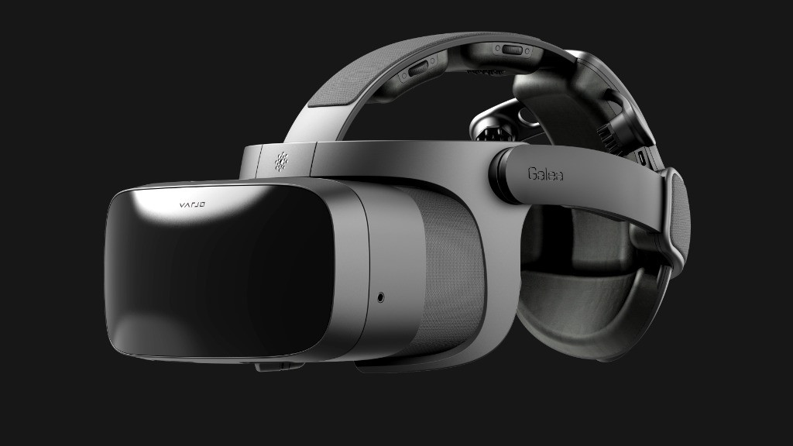
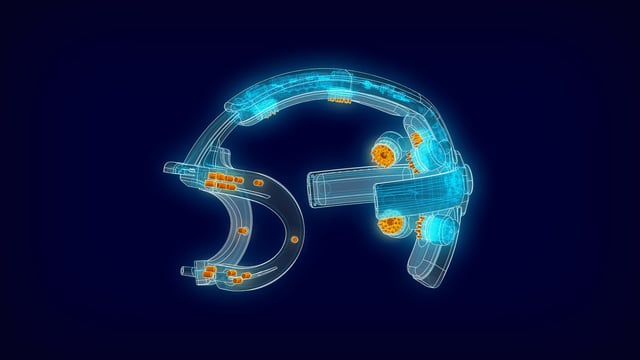
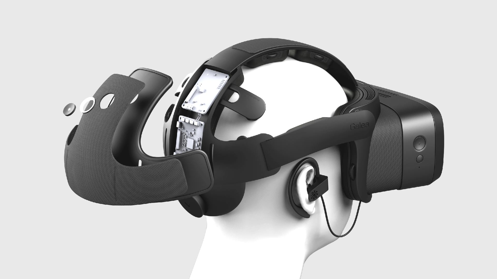
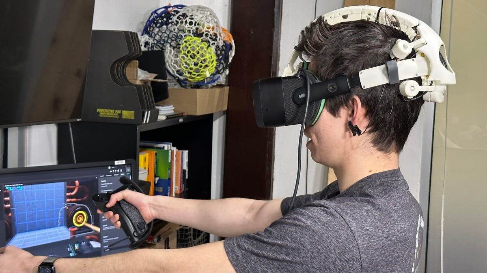

Descripción
Galea es un dispositivo diseñado para ser una interfaz avanzada de bio sensores para la cabeza, que combina la tecnología de realidad virtual y aumentada con lecturas fisiológicas y neurológicas en tiempo real. Desarrollado por OpenBCI, una empresa conocida por sus plataformas de neurotecnología de código abierto, Galea está diseñado para integrarse con los cascos de realidad virtual o realidad aumentada (VR/AR) existentes y proporcionar datos sobre la actividad cerebral, la frecuencia cardíaca, la actividad muscular, el movimiento ocular y la respuesta de la piel, lo que permite una nueva clase de aplicaciones que pueden responder al estado emocional y cognitivo del usuario.
El objetivo detrás de Galea es dar paso a los investigadores, desarrolladores y creadores para que puedan explorar y entender mejor la interacción entre el cerebro humano y el entorno digital, abriendo posibilidades para la adaptación de contenido en tiempo real basado en las reacciones del usuario. Esto tiene aplicaciones potenciales en el campo del entretenimiento, la salud mental, la educación y más allá.
La capacidad de Galea para medir y reaccionar a las señales biológicas en tiempo real promete revolucionar la personalización y la inmersión en experiencias virtuales, haciendo posible que los juegos y las aplicaciones de VR/AR se adapten dinámicamente para mejorar el aprendizaje, la retención y la experiencia emocional.
Galería
- 
- 
- 
- 
¿Qué aporta?
El dispositivo Galeo puede mejorar la accesibilidad para personas que padezcan discapacidades motoras o comunicativas. Este tipo de herramientas sobrepasan un sin fin de barreras que solían estar presentes en personas con tales discapacidades, ahora se enfrentan a nuevas oportunidades brindadas por el desarrollo de este tipo de tecnologías.
Este tipo de hardware incrementa exponencialmente la comunicación entre las personas y los ordenadores ya que elimina la necesidad de utilizar periféricos convencionales como teclados y ratones.
El hecho de disponer de un dispositivo capaz de controlar una interfaz o cualquier entorno digital con la mente abre grandes posibilidades de mejorar aspectos de nuestra vida cotidiana, aspectos como la educación. Un BCI sería capaz de proporcionar una experiencia inmersiva a los estudiantes que ayudarían a comprender conceptos de una forma completamente distinta a las que ya conocemos.